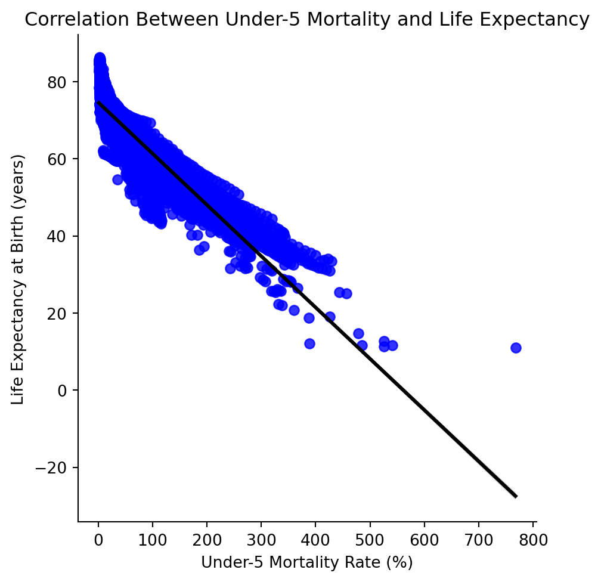
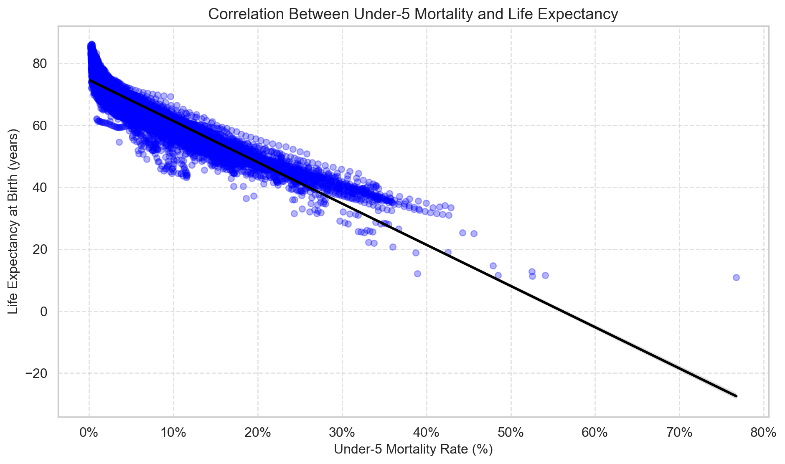
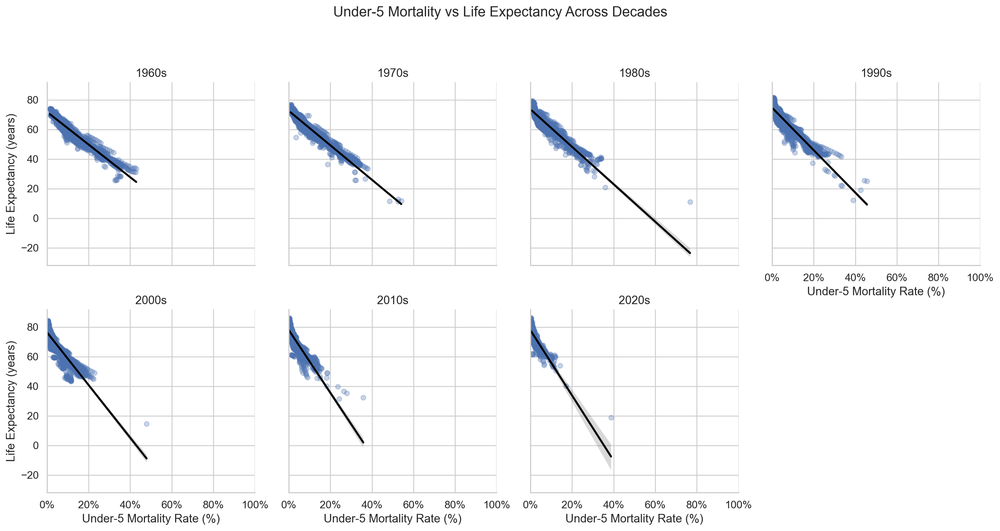
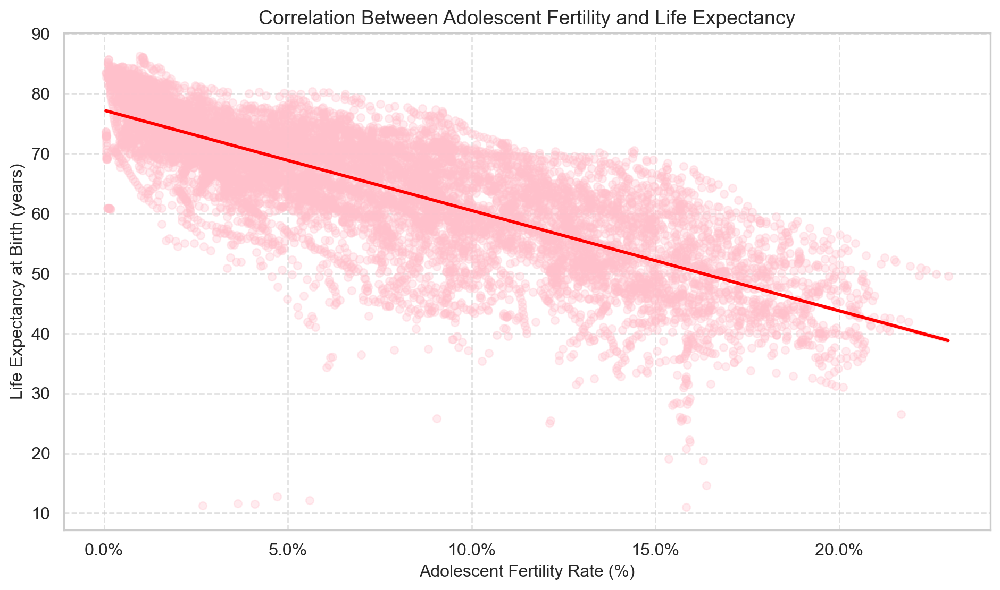
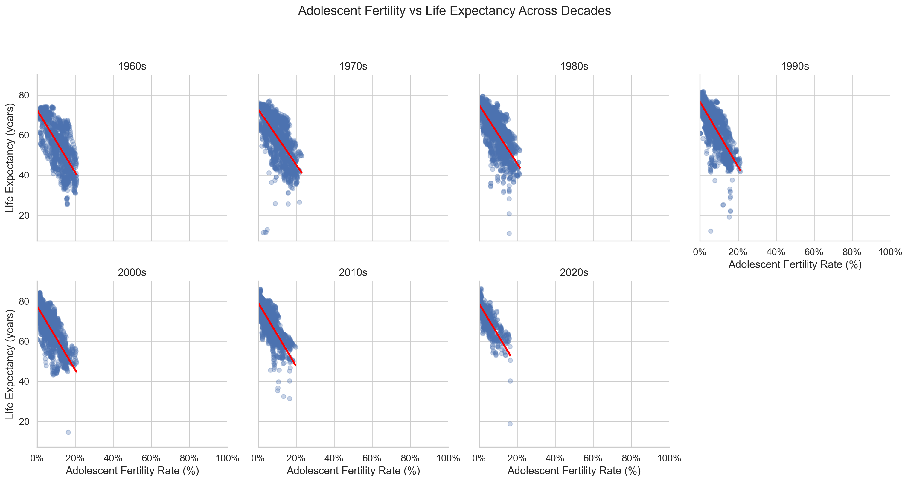
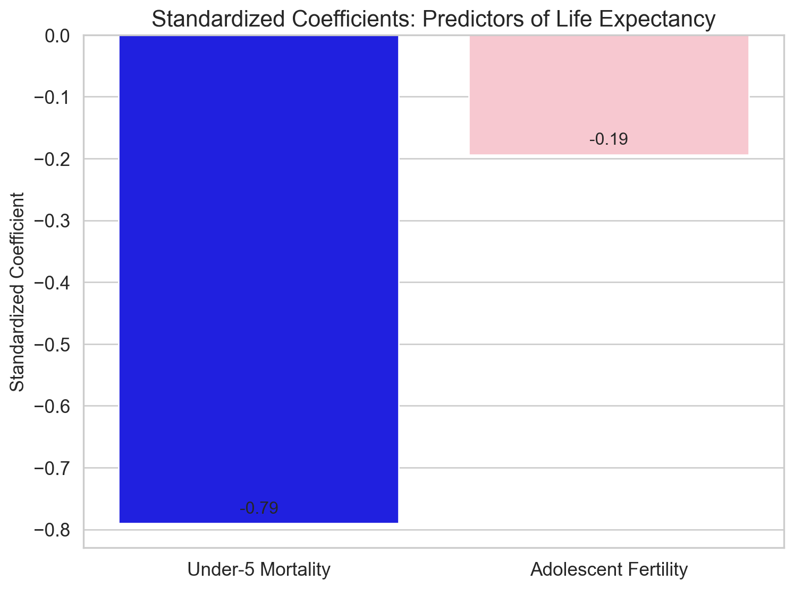
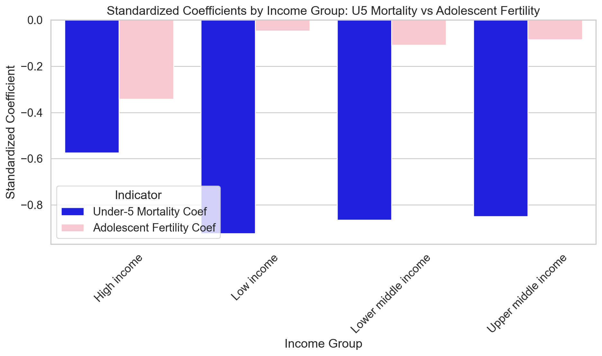

# import the packages
import pandas as pd
from sklearn.linear_model import LinearRegression
from sklearn.preprocessing import StandardScaler
import matplotlib.pyplot as plt
import seaborn as sns
import matplotlib.ticker as mtickQTM 350 Final Project Report
Early Life Matters: Shifting Impacts of Under-5 Mortality and Adolescent Fertility on Life Expectancy, 1960s–2020s.
This research investigates the extent to which under-5 mortality and adolescent fertility rates impact life expectancy, and how this impact has changed from the 1960s to the 2020s. The study also highlights whether the effect is different across income groups.
Introduction
In recent decades, global improvements in healthcare, education, and living standards have significantly reshaped life expectancy trends across countries. Yet the foundations of longevity are often set much earlier in life, during critical periods of childhood and adolescence. This study explores the relationship between two key early-life indicators—under-5 mortality and adolescent fertility—and life expectancy at birth, tracing how these relationships have evolved from the 1960s through the 2020s. By focusing on these early-life factors, we aim to better understand not only the immediate health risks faced by children and young mothers, but also the long-term implications for population health and societal development. Investigating these dynamics over a sixty-year span provides insight into how public health interventions, socio-economic progress, and changing demographic patterns have collectively shaped the prospects for a longer, healthier life.
Data Description
3 datasets:
- Life Expectancy at Birth (SP.DYN.LE00.IN)
- Under-5 Mortality Rate (SH.DYN.MORT)
- Adolescent Fertility Rate (SP.ADO.TFRT)
This study draws on three key datasets from the World Bank, covering global trends from the 1960s to the 2020s. The first, Life Expectancy at Birth (SP.DYN.LE00.IN), measures the average number of years a newborn is expected to live based on current mortality rates and serves as the primary outcome variable. The second, Under-5 Mortality Rate (SH.DYN.MORT), captures the number of deaths per 1,000 live births before age five, reflecting child health, nutrition, and healthcare access. The third, Adolescent Fertility Rate (SP.ADO.TFRT), measures the number of births per 1,000 women aged 15–19 and is often linked to educational and socio-economic conditions. Together, these datasets allow for a comprehensive analysis of how early-life factors have influenced life expectancy over time. To deepen the analysis, we also incorporated income group classifications for each observation to explore variations across different economic contexts.
The dataset summarizes 11,536 observations on life expectancy, mortality rate, and adolescent fertility rate.
The average life expectancy is about 65 years, ranging from 11 to 86 years.
The under-5 mortality rate averages around 7%, with most countries falling between 2% and 11%, though some extreme cases reach as high as 77%.
Adolescent fertility rates are generally low, averaging 7%, with most observations clustered between 3% and 11%.
Data Merge and Clean with SQL
The three datasets were initially downloaded separately in CSV format from the World Bank DataBank portal.
Each dataset originally had a wide format, with country names and codes followed by annual observations across decades.
The data processing involved several key merging steps:
- Reshaping: Each dataset was transformed from wide to long format, creating a structure where each row corresponds to a single country-year observation.
This facilitated easier merging and analysis across multiple time points. - Aligning Identifiers: Using the country codes (
CountryCode) and years (Year) as unique identifiers, the datasets were merged into a single cohesive dataset, ensuring that life expectancy, under-5 mortality, and adolescent fertility data were aligned for the same country and year. - Adding Contextual Information: An income group classification variable (
IncomeGroup) was added based on World Bank standards (Low, Lower Middle, Upper Middle, High Income), providing a socio-economic dimension to the analysis.
Through these steps, a unified panel dataset was constructed, allowing for time-series cross-sectional analysis across both indicators and countries.
Data Cleaning and Pre-processing
After merging, several cleaning and pre-processing operations were conducted to ensure the dataset was suitable for rigorous analysis:
- Missing Data Handling: Rows with missing values in any of the three primary variables (life expectancy, under-5 mortality, adolescent fertility) were removed to perform a complete case analysis, minimizing bias from incomplete records.
- Filtering Time Periods: Observations were kept only for years between 1960 and 2022 to ensure relevance and consistency across variables.
- Creating Decade Categories: A new variable (
Decade) was created by grouping years into their respective decades (e.g., 1960s, 1970s) to facilitate longitudinal comparisons and to observe temporal trends in health improvements. - Standardization of Variables:
Within each income group, life expectancy, under-5 mortality, and adolescent fertility rates were standardized (mean = 0, standard deviation = 1).
This step allows comparisons of effect sizes across groups with different baseline health conditions, avoiding scale-driven biases in regression results. - Variable Renaming: For clarity and consistency, indicator variables were renamed:
LifeExpectancy,U5Mortality, andAdoleFertility.
These cleaning steps produced a structured, complete, and analysis-ready dataset.
Summary of Key Variables
| Variable | Description |
|---|---|
Country |
Name of the country or territory |
CountryCode |
ISO 3-letter code used for merging datasets |
Year |
Observation year (ranging from 1960 to 2022) |
LifeExpectancy |
Life expectancy at birth in years |
U5Mortality |
Under-5 mortality rate (deaths per 1,000 live births) |
AdoleFertility |
Adolescent fertility rate (births per 1,000 women aged 15–19) |
IncomeGroup |
World Bank income group classification (Low, Lower Middle, Upper Middle, High Income) |
Decade |
Decade label assigned based on the year |
The cleaned dataset contains approximately 11,500 valid country-year observations, offering rich temporal and geographic variation necessary for exploring global patterns in early-life health and longevity outcomes.
Data Analysis
The analysis explored how early-life health indicators, specifically under-5 mortality and adolescent fertility, relate to life expectancy across different income groups over the period from the 1960s through the 2020s. The dataset used for this analysis underwent standardization for improved interpretability of results.
Using regression analyses stratified by income group, the relationships between these indicators and life expectancy were quantified. Each subgroup analysis involved standardizing variables such as under-5 mortality (“U5Mortality”), adolescent fertility rates (“AdoleFertility”), and life expectancy (“LifeExpectancy”) to ensure comparability across different scales and groups. Results from these subgroup analyses indicated varying effect sizes across income groups. Specifically, higher income groups exhibited a generally weaker relationship between early-life indicators and life expectancy. In contrast, lower-income groups showed stronger negative relationships, underscoring how substantial reductions in child mortality and adolescent fertility rates significantly predict improvements in life expectancy.
A standardized regression approach allowed a clearer visualization and interpretation of these effects, emphasizing how socio-economic context modifies these health relationships. Notably, reductions in under-5 mortality and adolescent fertility rates yielded more pronounced benefits in terms of increased life expectancy in low and middle-income countries compared to high-income countries.
Visual examination of the regression outputs underscored that under-5 mortality had consistently strong negative associations with life expectancy across all groups, whereas adolescent fertility displayed variable impacts dependent on income level. This suggests targeted public health interventions addressing child health could universally enhance longevity, while adolescent health initiatives might require more tailored approaches depending on socio-economic context.
These findings reinforce the critical importance of early-life interventions in determining population health outcomes, highlighting that strategic public health investments and policy frameworks focused on children and adolescents are vital to fostering long-term societal development and health equity.
# import dataset and rename colomns for better readness
df = pd.read_csv('population_panel_clean.csv')
# Rename columns
df = df.rename(columns={
"lifeexp": "LifeExpectancy",
"u5mort": "U5Mortality",
"adofert": "AdoleFertility"
})Visual Analysis
Under-5 Mortality and Life Expectancy
We first examined the relationship between under-5 mortality and life expectancy.
# Scatter plot: Under-5 Mortality vs Life Expectancy
import seaborn as sns
import matplotlib.pyplot as plt
sns.lmplot(x="U5Mortality", y="LifeExpectancy", data=df, scatter_kws={"color":"blue"}, line_kws={"color":"black"})
plt.title("Correlation Between Under-5 Mortality and Life Expectancy")
plt.xlabel("Under-5 Mortality Rate (%)")
plt.ylabel("Life Expectancy at Birth (years)")
plt.show()
# Correlation between Under-5 Mortality and Life Expectancy
df['U5MortalityPercent'] = df['U5Mortality'] / 10
# Set up the plot style
sns.set(style="whitegrid", font_scale=1.1)
plt.figure(figsize=(10, 6))
# Simple scatter plot with regression line
sns.regplot(
data=df,
x="U5MortalityPercent",
y="LifeExpectancy",
scatter_kws={"alpha": 0.3, "s": 30},
line_kws={"color": "black"},
color="blue"
)
# Titles and labels
plt.title("Correlation Between Under-5 Mortality and Life Expectancy", fontsize=14)
plt.xlabel("Under-5 Mortality Rate (%)", fontsize=12)
plt.ylabel("Life Expectancy at Birth (years)", fontsize=12)
# Format x-axis as percentage
ax = plt.gca()
ax.xaxis.set_major_formatter(mtick.PercentFormatter(xmax=100))
plt.grid(True, linestyle="--", alpha=0.6)
plt.tight_layout()
plt.show()
Figure 1.
This figure illustrates the strong negative association between under-5 mortality rates and life expectancy at birth across countries.
Under-5 Mortality vs Life Expectancy Across Decades
We further explored how the relationship evolved over different decades.
# Correlation between Under-5 Mortality and Life Expectancy by Year
# Create decade column
df['decade'] = (df['year'] // 10) * 10
# Set up FacetGrid
g = sns.FacetGrid(df, col="decade", col_wrap=4, height=4)
g.map_dataframe(
sns.regplot,
x="U5MortalityPercent",
y="LifeExpectancy",
scatter_kws={"alpha": 0.3, "s": 30},
line_kws={"color": "black"}
)
g.set_axis_labels("Under-5 Mortality Rate (%)", "Life Expectancy (years)")
g.set_titles(col_template="{col_name}s")
g.set(xlim=(0, 100)) # limit x-axis for consistency
for ax in g.axes.flat:
ax.xaxis.set_major_formatter(mtick.PercentFormatter(xmax=100))
plt.suptitle("Under-5 Mortality vs Life Expectancy Across Decades", fontsize=16, y=1.05)
plt.tight_layout()
plt.show()
Figure 2.
This figure shows that the negative association between under-5 mortality and life expectancy remained consistent across all decades but became tighter over time as global mortality rates declined.
Adolescent Fertility and Life Expectancy
We also examined the correlation between adolescent fertility rates and life expectancy.
# Correlation between Adolescent Fertility and Life Expectancy
df['AdoleFertilityPercent'] = df['AdoleFertility'] / 10
# Set up the plot style
sns.set(style="whitegrid", font_scale=1.1)
plt.figure(figsize=(10, 6))
# Simple scatter plot with regression line
sns.regplot(
data=df,
x="AdoleFertilityPercent",
y="LifeExpectancy",
scatter_kws={"alpha": 0.3, "s": 30},
line_kws={"color": "red"},
color="pink"
)
# Titles and labels
plt.title("Correlation Between Adolescent Fertility and Life Expectancy", fontsize=14)
plt.xlabel("Adolescent Fertility Rate (%)", fontsize=12)
plt.ylabel("Life Expectancy at Birth (years)", fontsize=12)
# Format x-axis as percentage
ax = plt.gca()
ax.xaxis.set_major_formatter(mtick.PercentFormatter(xmax=100))
plt.grid(True, linestyle="--", alpha=0.6)
plt.tight_layout()
plt.show()
Figure 3.
This figure highlights a weaker but still negative association between adolescent fertility rates and life expectancy.
Adolescent Fertility vs Life Expectancy Across Decades
We analyzed whether the relationship between adolescent fertility and life expectancy changed across decades.
# Correlation between Adolescent Fertility and Life Expectancy by Year
# Create decade column
df['decade'] = (df['year'] // 10) * 10
# Set up FacetGrid
g = sns.FacetGrid(df, col="decade", col_wrap=4, height=4)
g.map_dataframe(
sns.regplot,
x="AdoleFertilityPercent",
y="LifeExpectancy",
scatter_kws={"alpha": 0.3, "s": 30},
line_kws={"color": "red"}
)
g.set_axis_labels("Adolescent Fertility Rate (%)", "Life Expectancy (years)")
g.set_titles(col_template="{col_name}s")
g.set(xlim=(0, 100)) # limit x-axis for consistency
for ax in g.axes.flat:
ax.xaxis.set_major_formatter(mtick.PercentFormatter(xmax=100))
plt.suptitle("Adolescent Fertility vs Life Expectancy Across Decades", fontsize=16, y=1.05)
plt.tight_layout()
plt.show()
Figure 4.
This figure shows that the negative relationship between adolescent fertility and life expectancy persisted across decades, but the association was weaker and more variable than under-5 mortality.
Standardized Coefficients
To better compare effects, we standardized the variables and ran regressions.
# Compare whether Adolescent fertility or U-5 mortality correlates more with life expectancy using standardized coefficients
# Drop missing values (if any)
df_clean = df.dropna(subset=["LifeExpectancy", "U5Mortality", "AdoleFertility"])
# Define features and target
X = df_clean[["U5Mortality", "AdoleFertility"]]
y = df_clean["LifeExpectancy"]
# Standardize predictors and target
scaler_X = StandardScaler()
scaler_y = StandardScaler()
X_scaled = scaler_X.fit_transform(X)
y_scaled = scaler_y.fit_transform(y.values.reshape(-1, 1)).flatten()
# Fit the linear regression model
model = LinearRegression()
model.fit(X_scaled, y_scaled)
# Create dataframe for standardized coefficients
coef_df = pd.DataFrame({
"Indicator": ["Under-5 Mortality", "Adolescent Fertility"],
"Standardized Coefficient": model.coef_
}).sort_values(by="Standardized Coefficient", key=abs, ascending=False)
# Plotting
sns.set(style="whitegrid", font_scale=1.2)
plt.figure(figsize=(8, 6))
bars = sns.barplot(
data=coef_df,
x="Indicator",
y="Standardized Coefficient",
palette=["blue", "pink"]
)
# Add values on bars
for bar in bars.patches:
height = bar.get_height()
bars.annotate(f"{height:.2f}",
xy=(bar.get_x() + bar.get_width() / 2, height),
xytext=(0, 5),
textcoords="offset points",
ha='center', va='bottom', fontsize=12)
# Final touches
plt.title("Standardized Coefficients: Predictors of Life Expectancy", fontsize=16)
plt.ylabel("Standardized Coefficient", fontsize=13)
plt.xlabel("")
plt.tight_layout()
plt.show()
Figure 5.
This figure shows that under-5 mortality has a much stronger negative standardized effect on life expectancy compared to adolescent fertility.
Effects by Income Group
Finally, we stratified the analysis by income groups.
# Analysis on whether the effect sizes differ across income groups
df = pd.read_csv('population_panel_clean.csv')
df = df.rename(columns={
"lifeexp": "LifeExpectancy",
"u5mort": "U5Mortality",
"adofert": "AdoleFertility"
})
group_coefs = []
# Group by income_group and run standardized regression
for income, group in df.groupby("income_group"):
X = group[["U5Mortality", "AdoleFertility"]]
y = group["LifeExpectancy"]
scaler_X = StandardScaler()
scaler_y = StandardScaler()
X_scaled = scaler_X.fit_transform(X)
y_scaled = scaler_y.fit_transform(y.values.reshape(-1, 1)).flatten()
model = LinearRegression()
model.fit(X_scaled, y_scaled)
group_coefs.append({
"Income Group": income,
"Under-5 Mortality Coef": model.coef_[0],
"Adolescent Fertility Coef": model.coef_[1]
})
coefs_df = pd.DataFrame(group_coefs)
coefs_melted = coefs_df.melt(id_vars="Income Group",
value_vars=["Under-5 Mortality Coef", "Adolescent Fertility Coef"],
var_name="Indicator",
value_name="Standardized Coefficient")
sns.set(style="whitegrid", font_scale=1.2)
plt.figure(figsize=(10, 6))
sns.barplot(data=coefs_melted, x="Income Group", y="Standardized Coefficient", hue="Indicator", palette=["blue", "pink"])
plt.title("Standardized Coefficients by Income Group: U5 Mortality vs Adolescent Fertility")
plt.ylabel("Standardized Coefficient")
plt.xlabel("Income Group")
plt.xticks(rotation=45)
plt.axhline(0, color='black', linestyle='--')
plt.tight_layout()
plt.show()
print("\nStandardized Coefficients Table:")
print(coefs_df)
Standardized Coefficients Table:
Income Group Under-5 Mortality Coef Adolescent Fertility Coef
0 High income -0.575164 -0.341895
1 Low income -0.923888 -0.047629
2 Lower middle income -0.865206 -0.108201
3 Upper middle income -0.850363 -0.085107Figure 6.
This figure highlights that under-5 mortality consistently shows a strong negative relationship with life expectancy across all income groups, while the effect of adolescent fertility is weaker and varies by economic context.
Which Factor Has Stronger Influence by Income Group:
# Add a new column that tells which factor is stronger
coefs_df['Stronger Predictor'] = coefs_df.apply(
lambda row: 'Under-5 Mortality' if abs(row['Under-5 Mortality Coef']) > abs(row['Adolescent Fertility Coef']) else 'Adolescent Fertility',
axis=1
)
print("\nWhich Factor Has Stronger Influence by Income Group:")
print(coefs_df[['Income Group', 'Stronger Predictor']])
Which Factor Has Stronger Influence by Income Group:
Income Group Stronger Predictor
0 High income Under-5 Mortality
1 Low income Under-5 Mortality
2 Lower middle income Under-5 Mortality
3 Upper middle income Under-5 MortalityResults and Discussion
The results from the standardized regressions confirmed that under-5 mortality is a strong and consistent predictor of life expectancy across all income groups. The standardized coefficient for under-5 mortality was much larger in magnitude than that for adolescent fertility, suggesting that reductions in child mortality play a more powerful role in increasing life expectancy.
When stratified by income group, the analysis showed that the negative relationship between under-5 mortality and life expectancy was stronger for low and middle-income countries compared to high-income countries. In contrast, the relationship between adolescent fertility and life expectancy was weaker overall, and its strength varied more noticeably across different income groups.
These patterns suggest that improvements in child health indicators, especially reductions in mortality under age five, have contributed significantly to gains in longevity, particularly in countries with limited resources. Meanwhile, adolescent fertility has a comparatively smaller, but still important, impact, with its influence more visible in countries where early childbearing remains prevalent.
The findings underline the importance of early-life health interventions. Reducing child mortality consistently leads to longer life expectancy across all contexts, while reducing adolescent fertility may provide additional gains depending on the socio-economic environment.
Reflection on Findings and Limitations:
While the findings are robust and align with public health theory, several limitations should be acknowledged.
First, the data are observational, meaning causal relationships cannot be definitively established.
Second, the analysis focuses on two early-life factors, but other important variables (such as maternal education, access to sanitation, or broader healthcare infrastructure) were not included.
Third, although standardization improved comparability, some regional nuances may still be masked when grouping countries by income level only.
Future research could address these limitations by incorporating more covariates and exploring region-specific trends.
Conclusion
This study demonstrates the critical role that early-life conditions, particularly child health and adolescent reproductive health, play in shaping population longevity.
By examining global trends over six decades and across income groups, we find that reducing under-5 mortality has a universally strong positive effect on life expectancy, while reducing adolescent fertility contributes more variably depending on a country’s economic context.
These results emphasize that public health investments targeting maternal and child health remain essential strategies for improving life expectancy worldwide. For low and middle-income countries, efforts to lower both child mortality and adolescent fertility can have substantial long-term benefits.
In high-income countries, continued focus on early-childhood care is crucial to sustaining gains, even if the marginal effects are smaller.
Ultimately, fostering equitable health outcomes from an early age is a cornerstone for sustainable societal development and health equity around the globe.